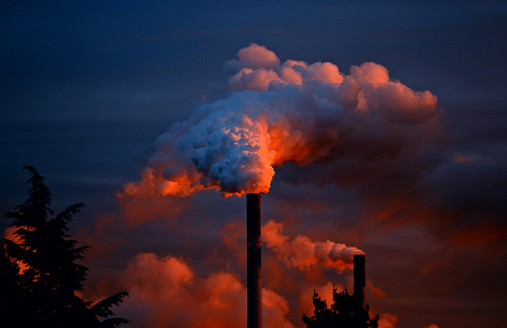

.png)


Poluarea reprezintă contaminarea mediului înconjurător cu materiale care afectează sănătatea umană, calitatea vieții sau funcția naturală a ecosistemelor (organismele vii și mediul în care trăiesc). Chiar dacă uneori poluarea mediului înconjurător este un rezultat al cauzelor naturale, cum ar fi erupțiile vulcanice, cea mai mare parte a substanțelor poluante provine din activitățile umane.
Poluarea aerului
Aerul din atmosfera Terrei este compus din aproximativ 78% nitrogen și 21% oxigen, plus alte câteva gaze: dioxid de carbon, neon și hidrogen. Poluarea aerului se referă la contaminarea aerului cu substanțe nocive, care sunt capabile să provoace afecțiuni și chiar moartea organismelor.
Poluarea apei
Apele curgătoare (fluvii, râuri, pârâuri) sau stătătoare (lacuri, mări, oceane) pot fi și ele poluate. Calitatea apei se diminuează și devine toxică atât pentru oameni, cât și pentru animalele și plantele care au ca mediu de viață apa. Nu de puține ori, posturile de televiziune au arătat imagini cu pești, delfini ori țestoase care au ajuns la mal sau care trăiesc în apă înconjurate de plastic, prinse în ambalaje de plastic sau care au înghițit plastice.
Poluarea solului
Când vine vorba despre poluarea solului, ne referim la substanțele solide sau lichide care ajung pe pământ sau în pământ și care contaminează solul. Aceste substanțe pot fi vizibile, urât mirositoare și pot amenința sănătatea, mai ales că solul este cel care oferă, direct sau indirect, oamenilor peste 90% din alimentație.
Un sol de calitate va fi cel care ne pune la dispoziție o alimentație de calitate. În schimb, un sol plin de poluanți va oferi contrariul.Când vine vorba despre poluarea solului, ne referim la substanțele solide sau lichide care ajung pe pământ sau în pământ și care contaminează solul. Aceste substanțe pot fi vizibile, urât mirositoare și pot amenința sănătatea, mai ales că solul este cel care oferă, direct sau indirect, oamenilor peste 90% din alimentație.
Un sol de calitate va fi cel care ne pune la dispoziție o alimentație de calitate. În schimb, un sol plin de poluanți va oferi contrariul.
Una dintre cele mai importante surse naturale de poluare sunt vulcanii, care în timpul erupțiilor eliberează cantități mari de gaze nocive în atmosferă. Gazele vulcanice includ dioxid de carbon, care poate fi fatal în concentrații mari și contribuie la schimbările climatice. Emisiile vulcanice includ, de asemenea, particule fine și ultrafine care pot conține substanțe chimice toxice și substanțe precum arsenul, plumbul și mercurul. Incendiile de vegetație, care pot fi cauzate în mod natural de loviturile de fulger, sunt, de asemenea, o sursă semnificativă de poluare a aerului. Fumul de incendiu conține cantități semnificative atât de dioxid de carbon, cât și de monoxid de carbon, care pot provoca sufocare. Cantități mari de particule fine se găsesc în fumul de incendiu, care prezintă un risc pentru sănătatea animalelor
Emisiile autovehiculelor sunt una dintre principalele cauze ale poluării aerului. China, Statele Unite, Rusia, India, Mexic și Japonia sunt liderii mondiali în ceea ce privește emisiile de poluare atmosferică. Principalele surse staționare de poluare includ fabrici chimice, centrale electrice pe cărbune, rafinării de petrol, uzine petrochimice, activitatea de eliminare a deșeurilor nucleare, incineratoare și ferme mari de animale. Poluarea aerului din agricultură provine din practicile contemporane care includ tăierea netă și arderea vegetației naturale, precum și pulverizarea pesticidelor și a erbicidelor.